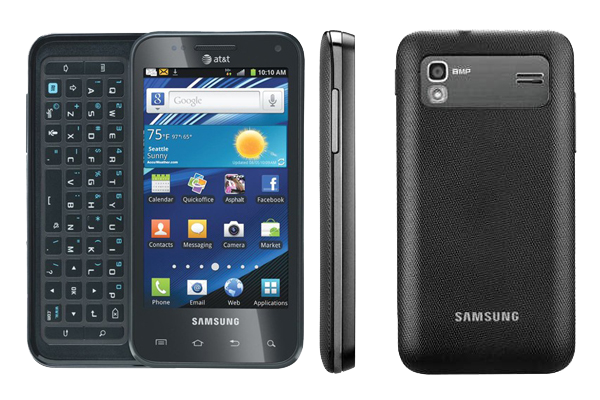

삼성 갤럭시 S2 캐퍼티브 글라이드
1. 외관

삼성전자가 2011년 AT&T 용으로 공개한 갤럭시S2의 파생모델.
2. 사양
| 프로세서 | nVIDIA Tegra 2 AP20 SoC. ARM Cortex-A9 MP2 1 GHz CPU, ULV GeForce 300 MHz GPU | ||
| 메모리 | 1 GB LPDDR2 SDRAM, 8 GB 내장 메모리, micro SDHC (최대 32 GB 지원) | ||
| 디스플레이 |
4.0인치 WVGA(480 x 800) RG-BG 펜타일 서브픽셀 방식의SMD→삼성D Super AMOLED 멀티터치 지원 정전식 터치 스크린 |
||
| 네트워크 | 기본 | HSPA+ 21Mbps, HSDPA & HSUPA & UMTS, GSM & EDGE | Wi-Fi 802.11a/b/g/n, 블루투스 3.0 |
| - | - | ||
| 카메라 | 전면 130만 화소, 후면 800만 화소 AF 및 LED 플래시 | ||
| 배터리 | Li-Ion 1650 mAh | ||
| 운영체제 | 안드로이드 2.3 (Gingerbread) → 4.0 (Icecream Sandwich) | ||
| 규격 | 64 x 124 x 13 mm, 147 g | ||
3. 상세
갤럭시 S II에 쿼티 자판을 탑재한 모델이자 테그라2를 사용했다.
또한 디스플레이는 갤럭시 S 1세대급으로 2세대 3G모델하고의 공통점은 지원 네트워크, 배터리 용량 정도이다.
특이하게 사진 파일이 .bmp 확장자로 저장된다고 한다.
한국 내 에서는 갤럭시 S II 급 성능의 물리 쿼티 스마트폰이라 소수 쿼티 유저들이 미국 직구를 통해 구해와 물량이 소량 풀려있는 상태다.
xda를 통해 커스텀 롬 역시 사용이 가능하기 때문에 인기는 그럭저럭 있는 편이다.